Laravel merupakan salah satu framework PHP yang paling banyak digunakan dalam dunia pengembangan aplikasi web saat ini. Framework ini dikembangkan oleh Taylor Otwell dan merupakan proyek open source yang dirancang untuk mempercepat proses development dengan menyediakan berbagai fitur siap pakai. Laravel menerapkan pola arsitektur MVC (Model-View-Controller) yang memungkinkan developer untuk memisahkan logika bisnis, tampilan, dan pengelolaan data secara terstruktur dan rapi.
Dalam pengembangan website modern, penggunaan framework menjadi hal yang sangat penting karena mampu mempercepat proses pembuatan aplikasi sekaligus menjaga kualitas dan keamanan kode. Laravel hadir dengan berbagai fitur bawaan yang lengkap seperti Eloquent ORM, Blade Templating Engine, Artisan Console, serta sistem routing dan middleware yang fleksibel.
Pada praktikum ini, mahasiswa akan mempelajari langkah-langkah awal penggunaan Laravel — mulai dari instalasi tools pendukung, pembuatan project baru, memahami struktur direktori, menjalankan server development, hingga menampilkan halaman sederhana sebagai output pertama. Praktikum ini menjadi fondasi penting sebelum melanjutkan ke materi Laravel yang lebih lanjut.
Setelah menyelesaikan praktikum ini, mahasiswa diharapkan mampu:
php artisan serveBerikut tools dan perangkat lunak yang digunakan dalam praktikum ini:
Laravel adalah framework PHP berbasis open source yang menggunakan pola arsitektur MVC (Model-View-Controller). Dikembangkan oleh Taylor Otwell sejak 2011, Laravel kini menjadi salah satu framework PHP paling populer di dunia. Laravel menyederhanakan proses development dengan menyediakan berbagai tools dan library yang sudah terintegrasi sehingga developer tidak perlu membangun semuanya dari nol.
MVC membagi aplikasi menjadi tiga komponen utama:
Bertanggung jawab atas pengelolaan data dan interaksi dengan database. Dibuat dengan perintah php artisan make:model NamaModel. Model menggunakan Eloquent ORM sehingga operasi database (insert, update, delete, query) bisa dilakukan dengan sintaks PHP yang intuitif.
Bertugas menampilkan data kepada pengguna dalam bentuk antarmuka (UI). Laravel menggunakan Blade Templating Engine yang memungkinkan penulisan kode PHP di dalam HTML menggunakan direktif seperti @if, @foreach, dan @extends.
Penghubung antara Model dan View. Controller menerima request, memproses data, lalu mengembalikan respons. Dibuat dengan perintah php artisan make:controller NamaController.
Sebelum menginstall Laravel, pastikan semua persyaratan sistem terpenuhi. Laravel 12 membutuhkan PHP versi 8.2 ke atas beserta sejumlah ekstensi PHP yang harus aktif: OpenSSL, PDO, Mbstring, Tokenizer, XML, Ctype, JSON, dan BCmath. Selain itu dibutuhkan Composer, Git, Node.js, dan NPM.
Cek versi masing-masing tool melalui terminal:
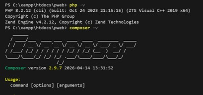
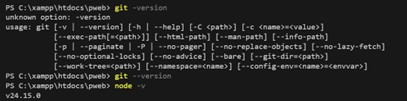
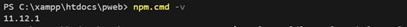
Ada dua cara membuat project Laravel: menggunakan Laravel Installer atau langsung via Composer. Pada praktikum ini digunakan Composer karena lebih umum dan tidak memerlukan instalasi tambahan.
Buka terminal, arahkan ke direktori kerja, lalu jalankan:
Tunggu hingga proses instalasi selesai. Composer akan mengunduh semua dependency yang dibutuhkan secara otomatis.
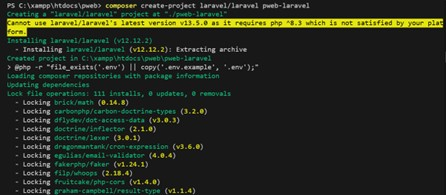
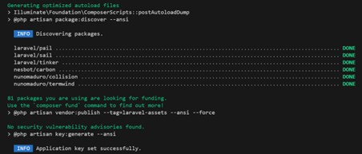
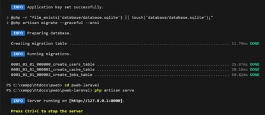
Setelah project berhasil dibuat, masuk ke direktori project dan install dependency frontend:
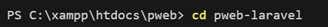
Untuk menjalankan project di browser, gunakan perintah Artisan yang akan membuat server development lokal:
Server akan berjalan di http://127.0.0.1:8000 secara default. Buka browser dan akses alamat tersebut untuk memastikan project Laravel berjalan dengan baik.
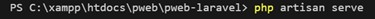
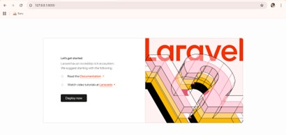
Sebagai percobaan pertama routing Laravel, buka file routes/web.php
dan tambahkan route berikut:
Simpan file lalu akses http://127.0.0.1:8000/hello di browser. Jika berhasil, browser akan menampilkan tulisan "Hello World", yang membuktikan sistem routing Laravel berjalan dengan benar.
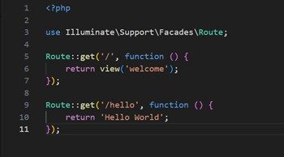
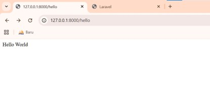
Berdasarkan praktikum yang telah dilakukan, seluruh tahapan instalasi dan konfigurasi Laravel berhasil diselesaikan dengan baik. Beberapa poin penting yang bisa disimpulkan:
app/ (berisi Model, Controller), resources/views/ (View/Blade),
routes/ (konfigurasi routing), dan public/ (root server web).
php artisan serve berhasil
menjalankan server lokal. Halaman default Laravel tampil di browser, menandakan
instalasi berjalan dengan benar.
web.php.
Halaman "Hello World" tampil di browser, membuktikan sistem routing Laravel
bekerja sesuai harapan.
Pada praktikum ini, mahasiswa telah berhasil mempelajari dan menerapkan langkah-langkah dasar penggunaan framework Laravel — mulai dari pengecekan persyaratan sistem, instalasi tools pendukung, pembuatan project baru, hingga menjalankan halaman pertama menggunakan routing Laravel.
Laravel terbukti menjadi framework PHP yang powerful sekaligus mudah digunakan berkat sistem routing yang sederhana, Artisan Console yang memudahkan berbagai tugas development, serta struktur direktori yang terorganisir mengikuti pola arsitektur MVC. Pemahaman dasar ini menjadi bekal penting untuk mempelajari fitur-fitur Laravel yang lebih lanjut pada praktikum berikutnya.